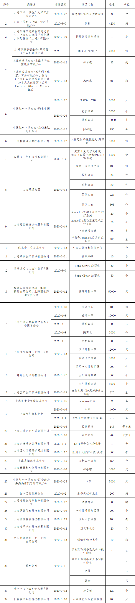

市人民医院接受疫情防控捐赠款物（第二批）情况公示
2020-04-16
新型冠状病毒感染的肺炎疫情牵动亿万人的心。疫情期间，我院以习总书记疫情防控工作的指示与批示精神为指导，按照“坚定信心、同舟共济、科学防治、精准施策”的要求，深入贯彻落实上级主管部门的决策部署，织密医院疫情防控的立体网络，实现对医院全方位、全要素、全流程的管控，确保五“零”即“员工零感染”“患者零漏诊”“来者零丢失”“救援零耽误”“医院零负面”；力求四“亮”即“线下防控工作亮”“线上防控咨询亮”“防控临床研究亮”“防控典型事迹亮”。
在接到市卫健委关于组建赴鄂医疗队的指令后，医院时间开展组织动员，全院同志闻令而动，积极响应，主动请缨，踊跃报名。医院先后派出了3批共计161名医护工作者分别开赴武汉金银潭医院、武汉三院、雷神山医院等，投入危重症新冠肺炎患者的诊疗；此外还陆续派驻32名医护人员至公卫中心，投身新冠肺炎的救治一线工作，充分发挥了抗疫“先锋队”和“桥头堡”的作用。
在此期间，市红十字会、各基金会、企事业单位及社会各界人士慷慨解囊，奉献爱心，向医院捐助了现金、口罩、防护眼镜、防护服、隔离衣、食品等防护物资及生活物资。他们用实际行动助力疫情防控阻击战，充分彰显了责任担当和家国情怀。在此，医院向无私奉献的捐赠人致以诚挚的敬意！
我院承诺，将本着公开、透明、高效的原则进行捐赠款物的管理，按照捐赠人的意愿，将物资尽快用于疫情防控工作，并接受社会各界监督。
现将我院3月7日至4月10日接受的第二批捐赠款物情况予以公示，（具体情况详见附件）。后续接受的捐赠款物，我院办理完相关流程后将继续予以公示。
附件：市人民医院接受疫情防控捐赠款物（第二批）明细表
市人民医院
2020年4月16日
